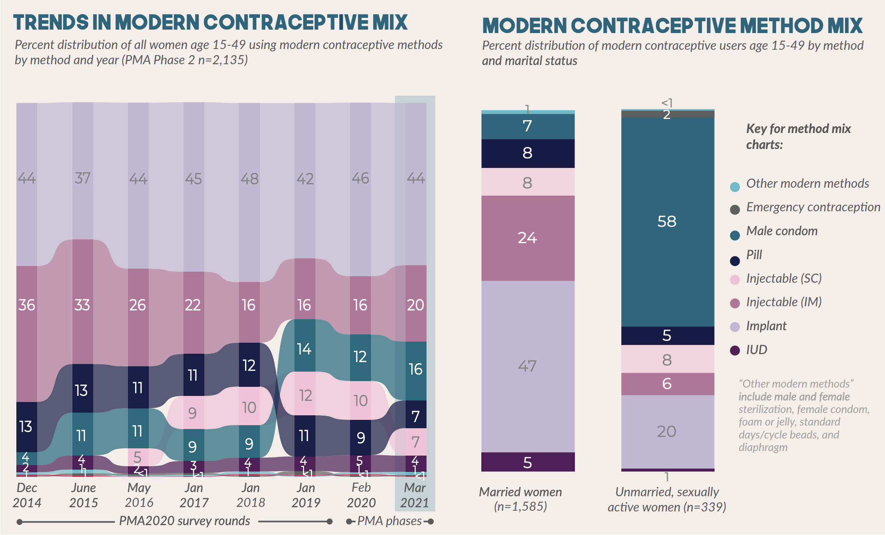
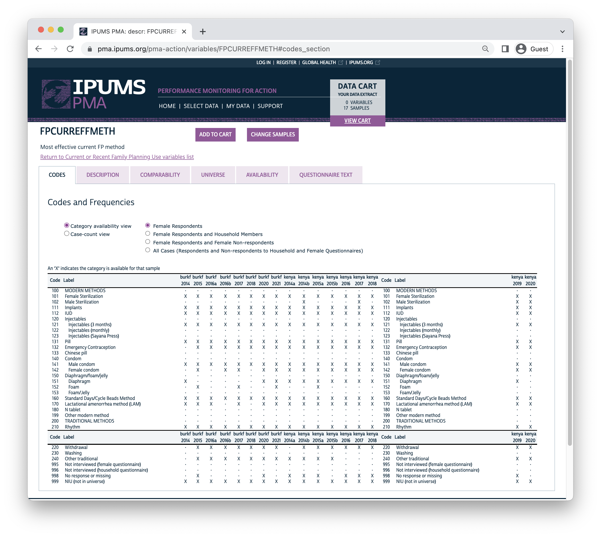
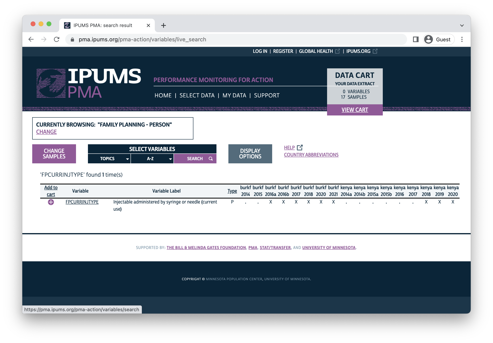
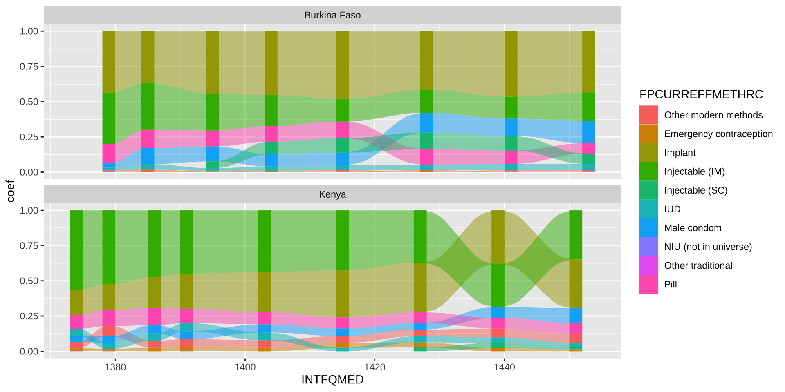
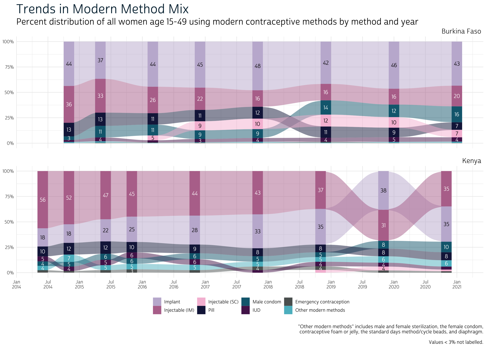
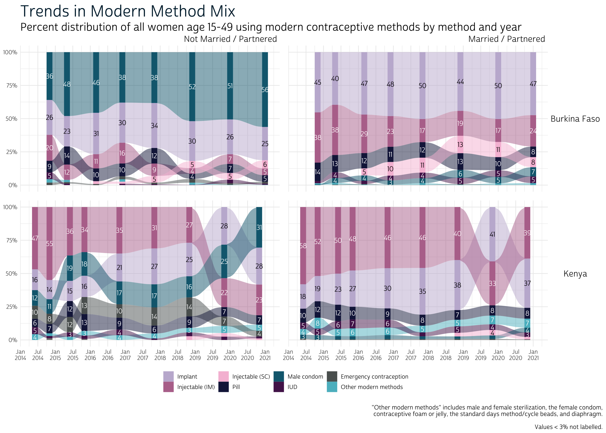

Which methods are have gained popularity among modern method users since 2014?
Modern Contraceptive Method Mix is a core indicator in the FP2030 Measurement Framework representing the distribution of modern method users by method. Researchers use this distribution to understand which family planning methods are preferred and accessible in a particular place.
While there is no “right” method mix or “ideal” method, there is general agreement that providing access to a wide variety of methods is both a component of quality of care as well as an important principle of rights-based family planning.
Modern Method Mix can change year-to-year in response to the introduction of new methods in-country, access restrictions (e.g. stockouts), increased need for specific methods (e.g. those that protect against sexually transmitted infections), and shifting user preferences.1 Cross-sectional PMA surveys are fielded approximately once per year, allowing researchers to monitor these changes at annual intervals. Typically, you’ll find “Trends in Modern Contraceptive Mix” updated in the PMA Survey Results Summary published for each new sample.

In this post, we’ll show how you can make a graphic similar to this one in R using a single data extract downloaded from IPUMS PMA. We’ll be focusing on Modern Method Mix, but we recommend using IPUMS data any time you want to investigate how indicators change over time or how they compare across populations. That’s because the IPUMS PMA data extract system is designed both to allow researchers to combine data from multiple samples and to flag important comparability issues between those samples.
You can compare trends in Modern Method Mix for any number of PMA samples with a single data extract from IPUMS PMA. Here, we’ll illustrate using data from two countries, Burkina Faso and Kenya, where cross-sectional data have been collected continuously between 2014 and 2021.
| Country | Sample Year | Data Collection Period |
|---|---|---|
| Burkina Faso | 2014 | Nov 2014 - Jan 2015 |
| 2015 | Apr 2015 - June 2015 | |
| 2016a | Mar 2016 - Apr 2016 | |
| 2016b | Nov 2016 - Feb 2017 | |
| 2017 | Nov 2017 - Jan 2018 | |
| 2018 | Dec 2018 - Jan 2019 | |
| 2020 | Dec 2019 - Feb 2020 | |
| 2021 | Dec 2020 - Mar 2021 | |
| Kenya | 2014a | May 2014 - Aug 2014 |
| 2014b | Nov 2014 - Dec 2014 | |
| 2015a | Jun 2015 - Jul 2015 | |
| 2015b | Nov 2015 - Dec 2015 | |
| 2016 | Nov 2016 - Dec 2016 | |
| 2017 | Nov 2017 - Dec 2017 | |
| 2018 | Nov 2018 - Jan 2019 | |
| 2019 | Nov 2019 - Dec 2019 | |
| 2020 | Nov 2020 - Dec 2020 |
Our extract will contain all of these cross-sectional samples, filtered to include only Female Respondents. It will also contain the following variables:
We’ll load the extract and a few key packages into R like so:
# Load packages
library(ipumsr)
library(tidyverse)
library(srvyr)
library(ggalluvial)
# Load data extract
dat <- read_ipums_micro(
ddi = "data/pma_00165.xml",
data = "data/pma_00165.dat.gz"
)
Additionally, we’ll modify a few variables to improve readability:
INTFQCMC will be created for
each individual woman’s interview date2INTFQMEDPMA surveys ask each woman to report all family planning methods she or her partner are currently using to delay or avoid getting pregnant. The question looks something like this one, where the respondent is prompted to select all options that apply:
Which method or methods are you using?
PROBE: Anything else?
Select all methods mentioned.
SCROLL TO THE BOTTOM to see all choices.
[] Female sterilization
[] Male sterilization
[] Implant
[] IUD
[] Injectables
[] Pill
[] Emergency Contraception
[] Male condom
[] Female condom
[] Diaphragm
[] Foam/Jelly
[] Standard Days/Cycle beads
[] LAM
[] Rhythm method
[] Withdrawal
[] Other traditional method
[] No responseBecause a woman can report more than one method, PMA ranks the effectiveness of each method and uses only her most effective method to calculate Modern Method Mix. This ensures that sum of all methods included in Modern Method Mix is 100%.
Every PMA sample includes a variable FPCURREFFMETH that indicates the most effective method reported by the respondent on this question. However, it’s important to note that the list of methods may vary between samples.
Fortunately, IPUMS makes it easy to identify whether each method is
available for the researcher’s samples of interest. On the
FPCURREFFMETH codes
tab, we see the availability of every method in each sample from
Burkina Faso and Kenya.

Certain methods like N-tablet, Washing, or “Other Modern” were included in none of our samples. Others, like Diaphragm and Foam, appear intermittently: these methods may have been listed on the questionnaire, but appear unavailable if no women selected the associated response option (or if they were only selected in combination with a more effective method).
FPCURREFFMETH uses composite coding, where general
categories like Injectables (code 120) are used if a particular
questionnaire did not distinguish between specific sub-categories like
3-month, monthly, or Sayana Press (codes 121, 122, and 123). In Burkina
Faso and Kenya samples, women were not asked to specify injectable type
on this question; however, later samples included the following
supplementary question (accompanied by a visual aid):
Was the injection administered via syringe or small needle?
Show the image to the respondent.
[] Syringe
[] Small needle (Sayana Press)
[] No responseResponses to this question are recorded in the variable FPCURRINJTYPE. The IPUMS system shows that it was added to Burkina Faso samples beginning in 2016, and that it was added to Kenya samples beginning in 2018:

When the supplementary question associated with
FPCURRINJTYPE was added, PMA released a recoded version of
most effective method that you’ll find in FPCURREFFMETHRC
(the suffix RC indicates “recoded”). This variable makes
four adjustments to the original variable FPCURREFFMETH
(see description
tab):
FPCURRINJTYPE are
differentiated from those using 3-month injectables. (Sayana Press users
are identified as “Injectable (SC)” in the graphic at the top of this
post.)FPCURREFFMETH are coded “other traditional” in
FPCURREFFMETHRC if they fail to meet the criteria for
effective use of LAM. Specifically, LAM users must be less than six
months post-partum (see LASTDOBCMC)
and amenorrheic / not currently menstruating (see TIMEMENSTRUATE
and TIMEMENSTRUATEVAL).FPCURREFFMETH) are coded
“emergency contraception” in FPCURREFFMETHRC if they
reported using an emergency method at all in the last 12 months (see FPEFFECTIVEYR,
or FPECUSYR
for later samples).FPCURREFFMETH are coded “female sterilization” if
they indicated elsewhere that they had been sterilized (see FP1STMETHOD).PMA uses FPCURREFFMETHRC in its calculation of Modern
Method Mix, but FPCURREFFMETHRC was not retroactively added
to older samples. We’ll demonstrate how to recode
FPCURREFFMETH manually for samples where
FPCURREFFMETHRC is not available.
Notably, we won’t be able to identify users of Sayana Press for
samples prior to the introduction of FPCURRINJTYPE (this
explains the apparent growth from 0% in June 2015 to 5% in May 2016 in
the Burkina Faso graphic at the top of this post).
Instead, we’ll begin with the adjustment made for LAM users who are
not post-partum amenorrheic (PPA). Unfortunately, PMA does not include a
variable indicating whether women are PPA, so we’ll need to make our own
variable called PPA.
# `TIMEMENSTRUATE` gives a unit, while `TIMEMENSTRUATEVAL` gives a value
# We use these variables to calculate months since last period: `MENSTR_MOS`
dat <- dat %>%
mutate(
MENSTR_MOS = case_when(
TIMEMENSTRUATE == "Days" ~ TIMEMENSTRUATEVAL / 30,
TIMEMENSTRUATE == "Weeks" ~ TIMEMENSTRUATEVAL / 4,
TIMEMENSTRUATE == "Months" ~ TIMEMENSTRUATEVAL %>% as.double,
TIMEMENSTRUATE == "Years" ~ TIMEMENSTRUATEVAL * 12
)
)
# `INTFQCMC` gives the month of the interview, while
# `LASTDOBCMC` gives the month of most recent birth (or 9999 for no prior birth)
# The difference is the number of months since last birth: `BIRTH_MOS`
dat <- dat %>%
mutate(
BIRTH_MOS = case_when(
LASTDOBCMC < 9000 ~ INTFQCMC - LASTDOBCMC
)
)
# `TIMEMENSTRUATE` can also be "Before last birth"
# If so, or if MENSTR_MOS > BIRTH_MOS, women who gave birth < 6 months are PPA
# All others are not PPA (or NA if most recent period cannot be determined)
dat <- dat %>%
mutate(
PPA = case_when(
BIRTH_MOS < 6 & TIMEMENSTRUATE == "Before last birth" ~ TRUE,
BIRTH_MOS < 6 & MENSTR_MOS > BIRTH_MOS ~ TRUE,
BIRTH_MOS >= 6 | LASTDOBCMC > 9000 ~ FALSE
)
)
We use our PPA variable together with
FP1STMETHOD and FPEFFECTIVEYR to manually
build FPCURREFFMETHRC for early samples where it is not
available. Otherwise, we use the version of FPCURREFFMETHRC
provided by PMA for later samples.
dat <- dat %>%
mutate(
FPCURREFFMETHRC = case_when(
!is.na(`FPCURREFFMETHRC`) ~ FPCURREFFMETHRC %>% as_factor %>% as.character,
FP1STMETHOD == "Female sterilization" ~ "Female Sterilization",
FPCURRUSE != "Yes" & FPEFFECTIVEYR == "Emergency Contraception" ~ "Emergency Contraception",
FPCURREFFMETH == "Lactational amenorrhea method (LAM)" & !PPA ~ "Other traditional",
TRUE ~ FPCURREFFMETH %>% as_factor %>% as.character
)
)
You can review the changes made to FPCURREFFMETH in
FPCURREFFMETHRC like so:
# A tibble: 7 × 3
FPCURREFFMETH FPCURREFFMETHRC n
<fct> <chr> <int>
1 IUD Female Sterilization 1
2 Injectables (3 months) Female Sterilization 1
3 Injectables (3 months) Injectables (Sayana Press) 895
4 Female condom Female Sterilization 1
5 Lactational amenorrhea method (LAM) Other traditional 108
6 NIU (not in universe) Emergency Contraception 314
7 NIU (not in universe) Female Sterilization 7When we calculate Modern Method Mix, we’ll determine the share of women who use each method as a proportion of women age 15-49 who use any modern method. Every PMA sample includes a variable MCP indicating whether the woman is currently using a modern method (any method except Rhythm, Withdrawal, or Other Traditional).
MCP also uses the woman’s most effective current
method if she indicates that she is using more than one method.
Fortunately, MCP uses the same recoding logic shown for
FPCURREFFMETHRC above: it adjusts for non-PPA use of LAM,
Emergency Contraception within the past year, and prior sterilization
(see description
tab for details). Because MCP is available for every
PMA sample, we need to make no additional changes here.
MCP includes the values “Yes”, “No”, and “No response or
missing”. If you compare MCP with
FPCURREFFMETH, you’ll see that there are several cases
where MCP is “missing” even though the woman reported use
of a method:
# A tibble: 14 × 3
MCP FPCURREFFMETH n
<fct> <fct> <int>
1 No response or missing Female Sterilization 3
2 No response or missing Implants 149
3 No response or missing IUD 20
4 No response or missing Injectables (3 months) 93
5 No response or missing Pill 36
6 No response or missing Emergency Contraception 7
7 No response or missing Male condom 48
8 No response or missing Female condom 2
9 No response or missing Standard Days/Cycle Beads Method 5
10 No response or missing Lactational amenorrhea method (LAM) 2
11 No response or missing Rhythm 25
12 No response or missing Withdrawal 4
13 No response or missing Other traditional 1
14 No response or missing NIU (not in universe) 805How can this be? A strong majority of these cases are women who were not members of the de facto population of women who slept in the household during the night before the household screening interview (see RESIDENT). As a result, they are not considered part of the analytic sample, and they are assigned a weight of 0 in FQWEIGHT: these cases drop out in weighted population inference (or we can drop them ourselves to suppress a warning message).
# A tibble: 2 × 2
`FQWEIGHT == 0` n
<lgl> <int>
1 FALSE 35
2 TRUE 1165The remaining 35 cases are women who were missing data on one or more
of the variables used in recoding for MCP. We’ll keep them
in our data in order to calculate the correct degrees of freedom for
each sample.
Finally, we’re ready to use FPCURREFFMETHRC and
MCP to calculate Modern Method Mix. PMA uses a stratified
cluster-sample design, so we’ll use the variables EAID
and STRATA
together with FQWEIGHT as survey design information.
Because our data extract contains multiple samples, we’ll need to use
group_by
to iterate through each independent sample (identified by our labeling
variables COUNTRY and INTFQMED). To make this
easier, we’ll use two nested summarise
functions:
MCP and FPCURREFFMETHRC in each
populationdat %>%
filter(FQWEIGHT > 0) %>%
group_by(COUNTRY, INTFQMED) %>%
summarise(
.groups = "keep",
cur_data() %>%
as_survey_design(weights = FQWEIGHT, ids = EAID, strata = STRATA) %>%
group_by(MCP = as_factor(MCP), FPCURREFFMETHRC) %>%
summarise(survey_mean(prop = TRUE, prop_method = "logit", vartype = "ci"))
)
# A tibble: 288 × 7
# Groups: COUNTRY, INTFQMED [17]
COUNTRY INTFQMED MCP FPCURREFFMETHRC coef `_low` `_upp`
<fct> <dbl> <fct> <chr> <dbl> <dbl> <dbl>
1 Burkina Faso 1379 No NIU (not in universe) 0.999 0.996 1.00
2 Burkina Faso 1379 No Other traditional 0.000203 0.0000272 0.00151
3 Burkina Faso 1379 No Rhythm 0.000672 0.0000903 0.00497
4 Burkina Faso 1379 Yes Diaphragm 0.00102 0.000134 0.00765
5 Burkina Faso 1379 Yes Emergency Contraception 0.00163 0.000220 0.0120
6 Burkina Faso 1379 Yes Female Sterilization 0.00416 0.00128 0.0135
7 Burkina Faso 1379 Yes Implants 0.436 0.358 0.518
8 Burkina Faso 1379 Yes Injectables (3 months) 0.363 0.287 0.446
9 Burkina Faso 1379 Yes IUD 0.0194 0.00836 0.0445
10 Burkina Faso 1379 Yes Male condom 0.0349 0.0157 0.0758
11 Burkina Faso 1379 Yes Pill 0.134 0.0986 0.181
12 Burkina Faso 1379 Yes Standard Days/Cycle Beads Method 0.00544 0.00204 0.0144
13 Burkina Faso 1385 No NIU (not in universe) 0.989 0.982 0.993
14 Burkina Faso 1385 No No response or missing 0.000221 0.0000294 0.00166
15 Burkina Faso 1385 No Other traditional 0.00121 0.000306 0.00478
16 Burkina Faso 1385 No Rhythm 0.00848 0.00514 0.0139
17 Burkina Faso 1385 No Withdrawal 0.00157 0.000502 0.00493
18 Burkina Faso 1385 Yes Emergency Contraception 0.00463 0.00172 0.0124
19 Burkina Faso 1385 Yes Female condom 0.00287 0.000652 0.0126
20 Burkina Faso 1385 Yes Female Sterilization 0.00373 0.00123 0.0113
# … with 268 more rows
# ℹ Use `print(n = ...)` to see more rowsHere, coef sums to 100% for each level of
MCP, while the columns _low and
_upp report a 95% confidence interval for each estimate.
Because we’re only concerned with Modern Method Mix, we can disregard
any rows where MCP != "Yes".
To match the PMA graphic shown at the top of this post, we’ll make a few minor modifications to our summary table. First, we’ll combine a few of the lesser-used modern methods under “Other Modern Method”:
You can use fct_collapse to combine several factors levels into a new level like “other”. Conveniently, you can also use it to relabel levels as shown here for Implant, Injectable (IM), Injectable (SC), and Emergency contraception:
dat <- dat %>%
mutate(
FPCURREFFMETHRC = FPCURREFFMETHRC %>%
fct_collapse(
"Other modern methods" = c(
"Male Sterilization", "Female Sterilization", "Female condom",
"Foam", "Standard Days/Cycle Beads Method", "Diaphragm",
"Lactational amenorrhea method (LAM)"
),
"Implant" = "Implants",
"Injectable (IM)" = "Injectables (3 months)",
"Injectable (SC)" = "Injectables (Sayana Press)",
"Emergency contraception" = "Emergency Contraception",
)
)
We’ll now save the revised summary table as a data frame called
mix_tbl. We’ll also remove any of the rows that aren’t
necessary to calculate Modern Method Mix (where MCP is “No”
and “No response or missing”).
mix_tbl <- dat %>%
filter(FQWEIGHT > 0) %>%
group_by(COUNTRY, INTFQMED) %>%
summarise(
.groups = "keep",
cur_data() %>%
as_survey_design(weights = FQWEIGHT, ids = EAID, strata = STRATA) %>%
group_by(MCP = as_factor(MCP), FPCURREFFMETHRC) %>%
summarise(survey_mean(prop = TRUE, prop_method = "logit", vartype = "ci"))
) %>%
filter(MCP == "Yes")
mix_tbl
# A tibble: 131 × 7
# Groups: COUNTRY, INTFQMED [17]
COUNTRY INTFQMED MCP FPCURREFFMETHRC coef `_low` `_upp`
<fct> <dbl> <fct> <fct> <dbl> <dbl> <dbl>
1 Burkina Faso 1379 Yes Other modern methods 0.0106 0.00517 0.0217
2 Burkina Faso 1379 Yes Emergency contraception 0.00163 0.000220 0.0120
3 Burkina Faso 1379 Yes Implant 0.436 0.358 0.518
4 Burkina Faso 1379 Yes Injectable (IM) 0.363 0.287 0.446
5 Burkina Faso 1379 Yes IUD 0.0194 0.00836 0.0445
6 Burkina Faso 1379 Yes Male condom 0.0349 0.0157 0.0758
7 Burkina Faso 1379 Yes Pill 0.134 0.0986 0.181
8 Burkina Faso 1385 Yes Other modern methods 0.0138 0.00680 0.0278
9 Burkina Faso 1385 Yes Emergency contraception 0.00463 0.00172 0.0124
10 Burkina Faso 1385 Yes Implant 0.367 0.272 0.473
11 Burkina Faso 1385 Yes Injectable (IM) 0.333 0.226 0.459
12 Burkina Faso 1385 Yes IUD 0.0383 0.0194 0.0742
13 Burkina Faso 1385 Yes Male condom 0.114 0.0744 0.169
14 Burkina Faso 1385 Yes Pill 0.130 0.0947 0.177
15 Burkina Faso 1395 Yes Other modern methods 0.00325 0.000656 0.0159
16 Burkina Faso 1395 Yes Emergency contraception 0.00502 0.00215 0.0117
17 Burkina Faso 1395 Yes Implant 0.444 0.382 0.508
18 Burkina Faso 1395 Yes Injectable (IM) 0.261 0.194 0.341
19 Burkina Faso 1395 Yes Injectable (SC) 0.0477 0.0297 0.0756
20 Burkina Faso 1395 Yes IUD 0.0203 0.0120 0.0342
# … with 111 more rows
# ℹ Use `print(n = ...)` to see more rowsWith these revisions in place, we’re now ready to make our plot.
We’ve showcased the excellent ggalluvial package
in earlier posts,
so we won’t dig into the details too deeply here. In short: we use geom_stratum
to build stacked bars for each sample, and we use geom_flow
to show change over time. The argument decreasing = FALSE
ensures that the methods are arranged in order of popularity for each
sample.
A basic alluvial plot can be made like so:
mix_plot <- mix_tbl %>%
ggplot(aes(
x = INTFQMED,
y = coef,
fill = FPCURREFFMETHRC,
stratum = FPCURREFFMETHRC,
alluvium = FPCURREFFMETHRC
)) +
facet_wrap(vars(COUNTRY), ncol = 1) +
geom_flow(decreasing = FALSE) +
geom_stratum(size = 0, width = 2, decreasing = FALSE)
mix_plot

As always, we’ll apply our own custom theme and labels to clean-up
the final result. If you intend to make multiple plots with the same
theme, we recommend saving it as a function; we’ll call ours
theme_pma.
# Fonts
library(showtext)
sysfonts::font_add(
family = "cabrito",
regular = "../../fonts/cabritosansnormregular-webfont.ttf"
)
showtext_auto()
# Fonts for geom_text
update_geom_defaults("text", list(family = "cabrito", size = 4))
# Theme
theme_pma <- function(){
components <- list(
# Edit `theme_minimal`
theme_minimal() %+replace% theme(
text = element_text(family = "cabrito", size = 12),
plot.title = element_text(size = 26, color = "#00263A",
hjust = 0, margin = margin(b = 5)),
plot.subtitle = element_text(hjust = 0, margin = margin(b = 0), size = 18),
plot.caption = element_text(hjust = 1, size = 10, margin = margin(t = 15)),
plot.caption.position = "plot",
strip.background = element_blank(),
strip.text.x = element_text(size = 14, hjust = 1),
strip.text.y = element_text(size = 14, angle = 0),
panel.spacing = unit(1, "lines"),
legend.position = "bottom",
legend.title = element_blank()
) ,
# Add breaks by percent to y-axis, dates to x-axis
scale_y_continuous(labels = scales::label_percent()),
scale_x_continuous(
breaks = map(2014:2021, ~c(12*(.x - 1900) + 1, 12*(.x - 1900) + 7)) %>%
unlist(),
labels = map(2014:2021, ~c(paste("Jan", .x), paste("Jul", .x))) %>%
unlist() %>%
str_wrap(3)
),
# Custom colors copied from the PMA graphic
scale_fill_manual(values = c(
"Implant" = "#C3B7D5",
"Injectable (IM)" = "#B7749A",
"Injectable (SC)" = "#F6BFD8",
"Pill" = "#171E48",
"Male condom" = "#11687E",
"IUD" = "#541E59",
"Emergency contraception" = "#5B6160",
"Other modern methods" = "#5BBBC9"
)),
# Switch text labels from white to black for Implant & Injectable (SC)
scale_color_manual(values = c("white", "black")),
# Add text labels for each method (if > 3%)
stat_stratum(
geom = "text",
aes(
label = if_else(
coef > 0.03,
scales::percent(coef, 1, suffix = NULL),
""
),
color = FPCURREFFMETHRC %in% c("Implant", "Injectable (SC)")
),
size = 4,
show.legend = FALSE,
decreasing = FALSE
),
# Customize labels
labs(
x = NULL, y = NULL,
title = "Trends in Modern Method Mix",
subtitle = paste(
"Percent distribution of all women age 15-49 using modern",
"contraceptive methods by method and year"
),
caption = paste(
'"Other modern methods" includes male and female sterilization,',
'the female condom, contraceptive foam or jelly, the standard days',
'method/cycle beads, and diaphragm.') %>%
str_wrap(85) %>%
paste0('\n\nValues < 3% not labelled.')
)
)
}
You can apply your theme to mix_plot like so:
mix_plot + theme_pma()

Finally, you’ll also notice that PMA reports Modern Method Mix disaggregated by marital status MARSTAT. You may also see Modern Method Mix disaggregated by age AGE, education EDUCATTGEN, or parity BIRTHEVENT.
It’s easy to update our code for mix_tbl with these or
other variables, but it’s important to note that there may be zero
observations available for certain methods in some subgroups. In this
case, survey_mean
will be unable to estimate the standard error for each proportion, and
you’ll receive a warning message like this one:
Warning: glm.fit: algorithm did not convergeIf you’re simply constructing a graphic like the one we made above,
you can skip standard error estimation altogether by setting
vartype = NULL. Here, we demonstrate using a recoded
version of MARSTAT.
mar_tbl <- dat %>%
mutate(
MARSTAT = case_when(
MARSTAT == "Currently married" ~ "Married / Partnered",
MARSTAT == "Currently living with partner" ~ "Married / Partnered",
TRUE ~ "Not Married / Partnered"
),
MARSTAT = as_factor(MARSTAT)
) %>%
filter(FQWEIGHT > 0) %>%
group_by(COUNTRY, INTFQMED) %>%
summarise(
.groups = "keep",
cur_data() %>%
as_survey_design(weights = FQWEIGHT, ids = EAID, strata = STRATA) %>%
group_by(
MARSTAT, # Add `MARSTAT`
MCP = as_factor(MCP),
FPCURREFFMETHRC
) %>%
summarise(survey_mean(vartype = NULL))
) %>%
filter(MCP == "Yes")
mar_tbl
# A tibble: 255 × 6
# Groups: COUNTRY, INTFQMED [17]
COUNTRY INTFQMED MARSTAT MCP FPCURREFFMETHRC coef
<fct> <dbl> <fct> <fct> <fct> <dbl>
1 Burkina Faso 1379 Not Married / Partnered Yes Other modern methods 0.0258
2 Burkina Faso 1379 Not Married / Partnered Yes Emergency contraception 0.0191
3 Burkina Faso 1379 Not Married / Partnered Yes Implant 0.262
4 Burkina Faso 1379 Not Married / Partnered Yes Injectable (IM) 0.195
5 Burkina Faso 1379 Not Married / Partnered Yes IUD 0.0516
6 Burkina Faso 1379 Not Married / Partnered Yes Male condom 0.359
7 Burkina Faso 1379 Not Married / Partnered Yes Pill 0.0870
8 Burkina Faso 1379 Married / Partnered Yes Other modern methods 0.00920
9 Burkina Faso 1379 Married / Partnered Yes Implant 0.453
10 Burkina Faso 1379 Married / Partnered Yes Injectable (IM) 0.378
11 Burkina Faso 1379 Married / Partnered Yes IUD 0.0164
12 Burkina Faso 1379 Married / Partnered Yes Male condom 0.00457
13 Burkina Faso 1379 Married / Partnered Yes Pill 0.139
14 Burkina Faso 1385 Not Married / Partnered Yes Other modern methods 0.0166
15 Burkina Faso 1385 Not Married / Partnered Yes Emergency contraception 0.0113
16 Burkina Faso 1385 Not Married / Partnered Yes Implant 0.229
17 Burkina Faso 1385 Not Married / Partnered Yes Injectable (IM) 0.116
18 Burkina Faso 1385 Not Married / Partnered Yes IUD 0.0112
19 Burkina Faso 1385 Not Married / Partnered Yes Male condom 0.480
20 Burkina Faso 1385 Not Married / Partnered Yes Pill 0.136
# … with 235 more rows
# ℹ Use `print(n = ...)` to see more rowsOnly minor changes are needed to incorporate MARSTAT
into our graphic. We’ll switch from facet_wrap
to facet_grid,
where we’ll add new column facets for MARSTAT.
mar_tbl %>%
ggplot(aes(
x = INTFQMED,
y = coef,
fill = FPCURREFFMETHRC,
stratum = FPCURREFFMETHRC,
alluvium = FPCURREFFMETHRC
)) +
facet_grid(
rows = vars(COUNTRY),
cols = vars(MARSTAT) # Add `MARSTAT`
) +
geom_flow(decreasing = FALSE) +
geom_stratum(size = 0, width = 2, decreasing = FALSE) +
theme_pma()

In both countries, there’s quite a big difference in the popularity of modern methods between married / partnered and non-partnered women. Of course, the demand for modern family planning methods is probably very different for women in each of these subgroups. In the next few weeks, we’ll dig deeper into issues surrounding measurement of demand for family planning, and related measures like unmet need.